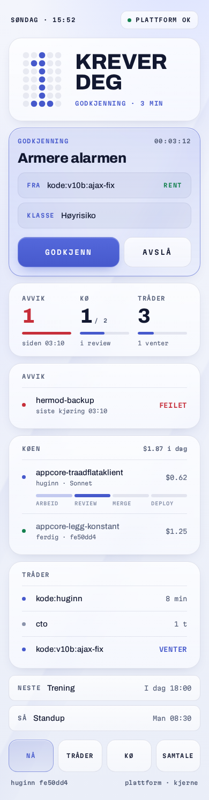
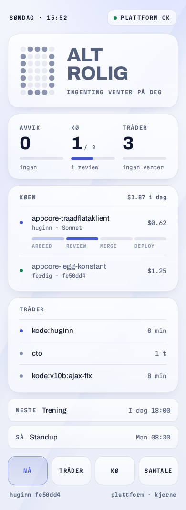

Samme periwinkle og samme rolleregler i alle, så bare skinnet skiller B1 og B3. Hver er vist mørk og lys, med og uten noe som krever deg. Trykk på et bilde for den levende siden (flagg i adressen: #lys, #rolig). Runde 4
Flate, hårstreker, hjørnemerker. I lys modus er punktmatrise-LCD-en fortsatt mørk, som en avlesning satt inn i et lyst apparat.
Avrundede brikker, tab-bar, tre tallkolonner. I lys modus: frostet glass på lys periwinkle-tåke med en liten løftskygge.